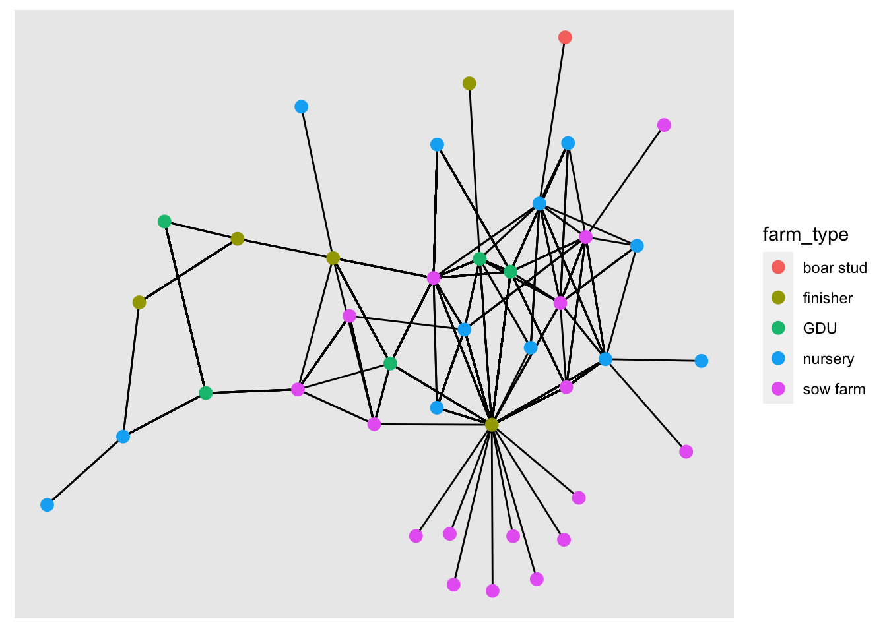

Lab 1
In this lab we will start making our first network objects, obtain network statistics and some visualization of the data.
1 Network visualization
1.1 Loading the data and visualizing the network
# Libraries we will use:
library(dplyr) # for data manipulation
library(ggplot2) # For making figures
library(ggraph) # For ploting the networks
library(igraph) # for network analysis
library(tidygraph) # tidyverse friendly network analysis
# Loading the data from the STNet package
node <- STNet::SwinePrem %>%
mutate(id = as.character(id))
edge <- STNet::SwineMov %>%
mutate(id_orig = as.character(id_orig), id_dest = as.character(id_dest))The data sets we will be using are:
nodewhich includes the information of the farmsedgewhich includes the information for the movements between the farms.
We use the function as_tbl_graph() to create the network from a data.frame. This function takes as arguments:x which requires the contacts data and assumes that contacts are directed. If we print the results, we will see a object from the class tbl_graph, which we will explain:
net <- as_tbl_graph(edge)
net## # A tbl_graph: 40 nodes and 1611 edges
## #
## # A directed multigraph with 1 component
## #
## # Node Data: 40 × 1 (active)
## name
## <chr>
## 1 17
## 2 12
## 3 14
## 4 11
## 5 7
## 6 9
## # … with 34 more rows
## #
## # Edge Data: 1,611 × 6
## from to date pigs.moved type_orig type_dest
## <int> <int> <chr> <int> <chr> <chr>
## 1 1 7 8/20/15 160 finisher sow farm
## 2 1 7 8/20/15 76 finisher sow farm
## 3 1 3 9/11/15 155 finisher nursery
## # … with 1,608 more rowsThe results of printing the object will show us the number of nodes and edges, we can see that our network has 40 nodes and 1611 edges. Then we can also see the attributes for the nodes (which in this case there is only the name) and the edges (which for this example has from, to, date, pigs.moved, type_orig, and type_dest).
We can treat this object like two data frames that are joined by an key or identification variable. Whenever we want to access one of the data frames to modify it, we can use either the function activate() or when using the pipes we can use %N>% to call the nodes or %E>% to call the edges. In the next example we will add the rest of the node information to our tbl_graph
net <- net %N>% # <- Notice we are including 'N' inside our pipe to specify we want to access the nodes
left_join(node, by = c('name' = 'id')) # Now we join to the node dataframe to include other variables
# When we print our object again we will see the new variables:
net## # A tbl_graph: 40 nodes and 1611 edges
## #
## # A directed multigraph with 1 component
## #
## # Node Data: 40 × 5 (active)
## name name.y lat long farm_type
## <chr> <fct> <dbl> <dbl> <fct>
## 1 17 US Farm Lease 41.6 -93.6 finisher
## 2 12 Uncle Bill's Farm 41.7 -92.7 nursery
## 3 14 Western Iowa Farms LLC 42.4 -96.3 nursery
## 4 11 Loess Hills Lavender Farm 41.7 -95.9 nursery
## 5 7 Kloubec Koi 41.8 -91.8 GDU
## 6 9 Kroul Farms 41.9 -91.5 nursery
## # … with 34 more rows
## #
## # Edge Data: 1,611 × 6
## from to date pigs.moved type_orig type_dest
## <int> <int> <chr> <int> <chr> <chr>
## 1 1 7 8/20/15 160 finisher sow farm
## 2 1 7 8/20/15 76 finisher sow farm
## 3 1 3 9/11/15 155 finisher nursery
## # … with 1,608 more rowsTo visualize the network we can use the function plot().
#plot network#
#for help look look for: ?plot.igraph#
plot(net)This figure looks a bit messy, to make it more informative we can visualize dome of the parameters. We use the arguments edge.arrow.size to adjust the size of the arrowhead, vertex.size to adjust the node size, and vertex.label to remove the names of the nodes.
#make it clearer: adjust size, remove labels#
plot(net, # Our network object
edge.arrow.size=0.2, # define the arrow size
vertex.size=4, # the sie of the node
vertex.label=NA) # We remove the name of the nodes
Exercise: Change the size of the nodes and the arrows to make a different graph.
1.2 Using ggraph
We can use base R to make our figures, but since we will be focusing on ggplot2, we will use the library ggraph which is based in ggplot2.
1.2.1 Changing the node color
We can get specific attributes from the tbl_graph inside the aes() argument, similar to what we would do for ggplot2. In the following plot, we will set the node color to the type of farm.
ggraph(graph = net) + # First we call the ggraph and specify our network
geom_edge_link() + # Add the edges
geom_node_point(aes(color = farm_type), size = 3) # add the nodes## Using `stress` as default layout
1.3 Layouts
We can change the position of the nodes using the argument layout. If we don’t specify any layout, ggraph will automatically set the layout ‘stress’. Force directed layouts place the nodes in fixed places based on various criteria. The layouts ‘nicely’ and ‘kk’ force the network in clear layouts, based on the position of the nodes in the network in terms of connectivity. They also attempt to keep the distance between connected nodes fixed.
# Plot with layout nicely
ggraph(net, layout = 'nicely') +
geom_edge_link() + # Add the edges
geom_node_point(aes(color = farm_type), size = 3) + # add the nodes
labs(title = 'Layout nicely')
# Plot with layout kk
ggraph(net, layout = 'kk') +
geom_edge_link() + # Add the edges
geom_node_point(aes(color = farm_type), size = 3) +
labs(title = 'Layout KK')You can read more about the different layours available HERE
Now we will use different layouts to see how the network changes.
Excercise: Try different layouts: ‘fr’, ‘lgl’, ‘graphopt’.
1.4 Size of the edge
ggraph(net, layout = 'kk') +
geom_edge_link(aes(width = pigs.moved)) + # Add the edges
geom_node_point(aes(color = farm_type), size = 3) +
scale_edge_width(range = c(0.01, 0.9))1.5 Node size
We will use the indegree value to assign the node size. First we will calculate indegree using the function centrality_degree() with the argument mode = "in", and we will also get rid of the loops with the argument loops = F.
net <- net %>%
mutate(indegree = centrality_degree(mode = 'in', loops = F))
ggraph(net, layout = 'kk') +
geom_edge_link(aes(width = pigs.moved)) + # Add the edges
geom_node_point(aes(color = farm_type, size = indegree)) +
scale_edge_width(range = c(0.01, 0.9))
We can use other network centrality measures such as outdegree, closeness, betwenness, among others.
net <- net %>%
mutate(outdegree = centrality_degree(mode = 'out', loops = F),
closeness = centrality_closeness(),
betweenness = centrality_betweenness(),
Nbs = neighborhood.size(graph = .)
)## Warning in closeness(graph = graph, vids = V(graph), mode = mode, weights =
## weights, : At centrality.c:2874 :closeness centrality is not well-defined for
## disconnected graphsnet## # A tbl_graph: 40 nodes and 1611 edges
## #
## # A directed multigraph with 1 component
## #
## # Node Data: 40 × 10 (active)
## name name.y lat long farm_type indegree outdegree closeness betweenness
## <chr> <fct> <dbl> <dbl> <fct> <dbl> <dbl> <dbl> <dbl>
## 1 17 US Fa… 41.6 -93.6 finisher 821 68 0.00106 220.
## 2 12 Uncle… 41.7 -92.7 nursery 21 5 0.00104 46.1
## 3 14 Weste… 42.4 -96.3 nursery 121 15 0.00105 64.7
## 4 11 Loess… 41.7 -95.9 nursery 0 1 0.00108 0
## 5 7 Kloub… 41.8 -91.8 GDU 116 3 0.00104 25.2
## 6 9 Kroul… 41.9 -91.5 nursery 0 6 0.00109 0
## # … with 34 more rows, and 1 more variable: Nbs <dbl>
## #
## # Edge Data: 1,611 × 6
## from to date pigs.moved type_orig type_dest
## <int> <int> <chr> <int> <chr> <chr>
## 1 1 7 8/20/15 160 finisher sow farm
## 2 1 7 8/20/15 76 finisher sow farm
## 3 1 3 9/11/15 155 finisher nursery
## # … with 1,608 more rowsExcercise: explore plotting the network using the different centrality measures to change its color or size.
2 Using other packages to plot the network
2.1 Interactive visualization using networkD3
The package networkD3 offer some interesting visualization options. This package uses javascript to create interactive visualizations so we need to start our indexing at 0 and not at 1 for the edges. for this we will substract 1 to the edges indexing
# Loading the library
library(networkD3)
# SUbstract 1 from the indexing of the nodes
edge_s <- edge %>%
count(id_orig, id_dest) %>%
mutate(id_orig = as.numeric(id_orig) - 1, id_dest = as.numeric(id_dest) - 1)
# Plot a simple network
simpleNetwork(edge_s)We can also add more information to our network such as the name, type of node and size of the edges.
# Plot
forceNetwork(Links = edge_s, Nodes = node,
Source = "id_orig", Target = "id_dest",
Value = "n", NodeID = "name",
Group = "farm_type", opacity = 0.8)Another interesting visualization from this package are the Sankey Networks. THis type of visualizations can be very helpful to se the flow of the movements. The height of the rectangles will represent the indegree, and the shaded line between two nodes represent the number of movements between a pair of nodes
# Plot
sankeyNetwork(Links = edge_s, Nodes = node, Source = "id_orig",
Target = "id_dest", Value = "n", NodeID = "name",
fontSize = 12, nodeWidth = 30)3 Calculating euclidean distance
We can also use the spatial location of the nodes to calculate the distance between a movement. To represent this distance we use euclidean distance, which is the distance using a straight line between two locations.
We will use the package raster for this part, so make sure its installed.
library(raster)
# First we need to include the information of origins and destination
edge <- edge %>%
left_join(node[c("id", "lat", "long")], by = c("id_orig" = "id")) %>%
rename(O_Lat = lat, O_Long = long) %>%
left_join(node[c("id", "lat", "long")], by = c("id_dest" = "id")) %>%
rename(D_Lat = lat, D_Long = long)
# Now we calculate the distance
edge$dist <- pointDistance(p1 = edge[c("O_Long", "O_Lat")], # Origin coordinates
p2 = edge[c("D_Long", "D_Lat")], # Destination coordinates
lonlat = T)
# We convert from m to km
summary(edge$dist/1000)## Min. 1st Qu. Median Mean 3rd Qu. Max.
## 24.55 178.00 229.16 223.15 247.91 472.95# We can see the quantiles:
quantile(edge$dist/1000, c(0.05,0.95))## 5% 95%
## 104.6104 472.9462# Lets look the distribution of distances
hist(edge$dist/1000,
xlim=range(0,500),
breaks=20,
main = "Distribution of euclidean distance (Km)", xlab="distance (km)")
boxplot(edge$dist/1000,
ylim=c(0,500),
main = "Boxlot of euclidean distance (Km)", ylab="distance (km)")node <- net %N>%
data.frame()Now we will add the network statistics to the data.frame and export the objects so we can load it in another session.
# we can export the network as a RDS object using the package readr
readr::write_rds(net, "Data/Outputs/net.rds")
# We will also export the edges with the distance and coordinates
write.csv(edge, "Data/Outputs/edge.csv", row.names = F)
write.csv(node, "Data/Outputs/node.csv", row.names = F)